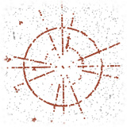

|
Jon Barron I'm a research scientist at Google DeepMind in San Francisco, where I lead a small team that mostly works on NeRF. At Google I've worked on Glass, Lens Blur, HDR+, VR, Portrait Mode, Portrait Light, and Maps. I did my PhD at UC Berkeley, where I was advised by Jitendra Malik. I've received the PAMI Young Researcher Award. |

|
ResearchI'm interested in computer vision, deep learning, generative AI, and image processing. Most of my research is about inferring the physical world (shape, motion, color, light, etc) from images, usually with radiance fields. Some papers are highlighted. |

|
CAT3D: Create Anything in 3D with Multi-View Diffusion Models
Ruiqi Gao*, Aleksander Holynski*, Philipp Henzler, Arthur Brussee, Ricardo Martin Brualla, Pratul P. Srinivasan, Jonathan T. Barron, Ben Poole* arXiv, 2024 project page / arXiv A single model built around diffusion and NeRF that does text-to-3D, image-to-3D, and few-view reconstruction, trains in 1 minute, and renders at 60FPS in a browser. |

|
Binary Opacity Grids: Capturing Fine Geometric Detail for Mesh-Based View Synthesis
Christian Reiser, Stephan J. Garbin, Pratul Srinivasan, Dor Verbin, Richard Szeliski, Ben Mildenhall, Jonathan T. Barron, Peter Hedman*, Andreas Geiger* SIGGRAPH, 2024 project page / video / arXiv Applying anti-aliasing to a discrete opacity grid lets you render a hard representation into a soft image, and this enables highly-detailed mesh recovery. |

|
SMERF: Streamable Memory Efficient Radiance Fields for Real-Time Large-Scene Exploration
Daniel Duckworth*, Peter Hedman*, Christian Reiser, Peter Zhizhin, Jean-François Thibert, Mario Lučić, Richard Szeliski, Jonathan T. Barron SIGGRAPH, 2024 (Honorable Mention) project page / video / arXiv Distilling a Zip-NeRF into a tiled set of MERFs lets you fly through radiance fields on laptops and smartphones at 60 FPS. |

|
Learned Initializations for Optimizing Coordinate-Based Neural Representations
Matthew Tancik*, Ben Mildenhall*, Terrance Wang, Divi Schmidt, Pratul Srinivasan, Jonathan T. Barron, Ren Ng CVPR, 2021 (Oral Presentation) project page / video / arXiv Using meta-learning to find weight initializations for coordinate-based MLPs allows them to converge faster and generalize better. |

|
NeRF in the Wild: Neural Radiance Fields for Unconstrained Photo Collections
Ricardo Martin-Brualla*, Noha Radwan*, Mehdi S. M. Sajjadi*, Jonathan T. Barron, Alexey Dosovitskiy, Daniel Duckworth CVPR, 2021 (Oral Presentation) project page / arXiv / video Letting NeRF reason about occluders and appearance variation produces photorealistic view synthesis using only unstructured internet photos. |
|
|
Learned Dual-View Reflection Removal
Simon Niklaus, Xuaner (Cecilia) Zhang, Jonathan T. Barron, Neal Wadhwa, Rahul Garg, Feng Liu, Tianfan Xue WACV, 2021 project page / arXiv Reflections and the things behind them often exhibit parallax, and this lets you remove reflections from stereo pairs. |
|  |
Cleaning the USNO-B Catalog Through Automatic Detection of Optical Artifacts
Jonathan T. Barron, Christopher Stumm, David W. Hogg, Dustin Lang, Sam Roweis The Astronomical Journal, 135, 2008 We use computer vision techniques to identify and remove diffraction spikes and reflection halos in the USNO-B Catalog. In use at Astrometry.net |
Miscellanea |
|
Thank you to Jon Barron for the website template. |